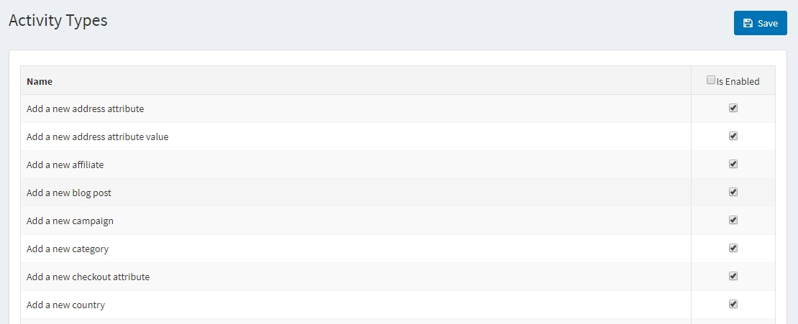
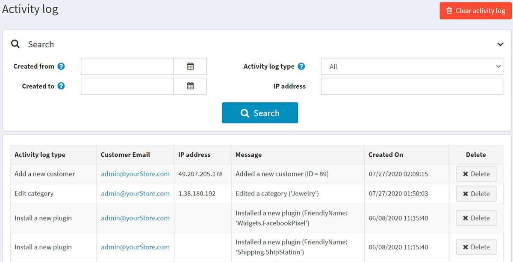

活動紀錄
活動紀錄（Activity log）用於追蹤系統中的使用者活動。在 nopCommerce 中，預設啟用所有「活動類型」的追蹤。商店管理員可以透過取消勾選相關核取方塊來停用它們。列出的活動類型大多僅針對管理員，記錄管理後台中的操作。不過，有些活動類型則是針對前台網站，用來追蹤顧客的操作（例如加入購物車/願望清單或下訂單）。
顧客活動類型
若要啟用或停用活動類型，請前往 顧客 → 活動類型。

勾選您想要啟用的活動類型旁邊的 已啟用 核取方塊，然後點擊右上角的 儲存。
顧客活動紀錄
若要搜尋活動紀錄，請前往 顧客 → 活動紀錄。

使用下列一個或多個欄位來定義搜尋條件：
- 若要依日期範圍搜尋，請在 建立日期 (起) 與 建立日期 (迄) 欄位中輸入日期範圍。或者，您可以點擊下拉式行事曆並選擇所需的日期區間。
- 活動紀錄類型：用於篩選顧客的活動。
- IP 位址：依 IP 位址搜尋顧客。
您可以點擊某個活動紀錄項目旁邊的 刪除 按鈕來清除該項目，或是點擊右上角的 清除活動紀錄 按鈕來清除所有活動紀錄。